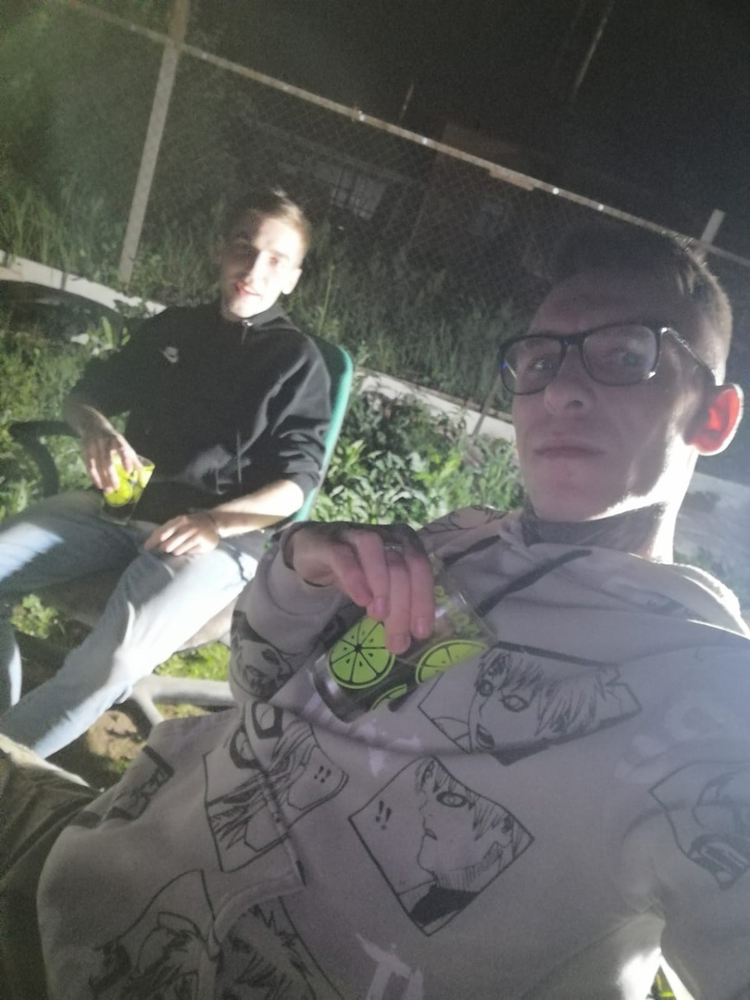

Это было самое начало пути. На этом этапе важно было проникнуться основами и настроиться на учёбу. И, возможно, подумать, как новые знания могут повлиять на ваше будущее.
Место где я начинал учиться и совершая свои уже первые шаги и ошибки. Самое сложное это было не останавливаться. Помню постоянно мне приходили мысли, может это не моё?
1 спринт: Я — чистый лист
Первые шаги
На первых этапах мы работали со страхами и сомнениями, которые часто испытывают новички. Один из них — страх перед чистым листом. Это, конечно же, намного сложнее, чем боязнь куска бумаги. Часто за этим ощущением скрываются более глубокие вопросы: с чего начать? а вдруг будет слишком сложно? что, если я не справлюсь?
Когда увидел свой первый проект который мне нужно сверстать, то первые два дня не знал даже что делать, а именно, что не мог ничего путного сделать и это был тот самый страх белого листа.
1 спринт: А если не получится?
Сомнения
Первый проект — позади! Но это всё ещё самое начало пути. Радость могла быстро померкнуть и смениться ожиданием провала. Или вы, наоборот, могли вдохновиться успехами и поверить в себя.
Были ощущения. Ну наконец то! Я сдал, что же дальше будет? Будет ли дальше ещё сложнее? Помню было много таких вопросов. Самое главное для меня это было увлекаться и получать удовольствие от программирования и тогда уже не боишься чего то неизведанного.
2 спринт: Погоня за идеалом
Перфекционизм
На этом этапе вы уже достаточно разбирались в основах вёрстки, чтобы понять, как много ещё впереди. Вы могли попытаться погнаться за идеалом и понять, что он недостижим. А, может, вы вовсе и не подвержены перфекционизму и вместо того, чтобы сделать идеально, старались просто сделать.
Я был в предкушении от следующего проекта и был вдохновлён что я его сделаю. По ощущениям он был для меня лёгким и было очень интересно его делать. Он отличался от других проектов и получилот него массу удовольствия.
2 спринт: О тех, кто рядом
Чувства
Всё это время вы были не одиноки (хотя, возможно, иногда и чувствовали, что одни против целого мира). Вас окружали одногруппники, команда сопровождения и просто близкие люди, которым можно пожаловаться, если очередной макет просто так не поддавался. Осваивать что-то новое легче, когда рядом есть единомышленники, не правда ли?
Тогда помню что я боялся чего-то спросить, думая что задам глупый вопрос. Что подумают другие участники группы. Глядя сейчас понимаю что глупых вопросов не бывает и всегда нужно держаться взаимной поддержки от других и самое главное становиться коллективным в учёбе. Истина где то рядом.
3 спринт: Обходные стратегии
Поддержка
На этом курсе вы постоянно решали разные задачи. В какой-то момент вам могло показаться, что решения просто иссякли. Значит, пришло время посмотреть на задачу под другим углом.
Самый сложный по моему ощущению проект. Были разные у меня состояния, помню даже были сильные эмоции и даже порывы что не смогу я это сделать и пора попрощаться с учёбой. Помню нужно было много чего делать: две темы, применение гридов (пришлось учить, т.к я их не использовал раньше), медиазапросы и переменные. Тогда пришлось мне очень посатараться над этим проектом...
3 спринт: Когда опускаются руки
<lifes-style: none;>
Во время учёбы часто возникает чувство, когда не знаешь, за что хвататься. Вроде и проектную пора сдавать, и задачи хочется порешать, и в теории получше разобраться, и жизнь не забыть пожить. В такие моменты очень нужна концентрация. Вспомните, откуда вы её черпали.
Главная мотивация - это наверное для меня - что хочу сменить профессию,поменять свою жизнь в лучшую сторон. Вот какие мысли посещали тогда. В конце концов я сдал проект, и смотря тогда, мне уже не страшны там всякие гриды и медиа с переменными.
«Сейчас я здесь»
Всё меняется

Сейчас вы уже очень много знаете о вёрстке. Но это только начало. Во-первых, впереди ещё много материала про «красотищу». Во-вторых, с окончанием курса учёба не заканчивается. Вёрстка — это целый мир. И этот мир постоянно меняется. Познать его полностью не получится, но это тот случай, когда важен сам процесс познания. Ведь часто путь — и есть результат.
Смотря на путь, который только начался я конечно же в предкушении чего-то нового.Сам по себе стал больше практиковаться, развиваться творчески и получать удовольствие от процесса. В общем наслаждаться от происходящего.